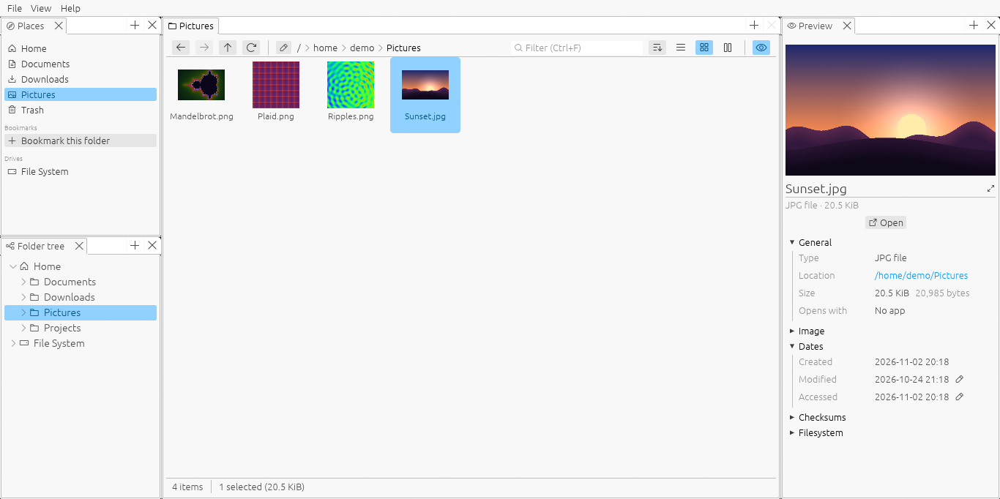

Tabs you can split side by side, previews, archives, a terminal that follows along, and themes. For Linux, Windows and Android, written in Rust with egui.
Try it in your browser
Open folders in tabs and drag them beside or below each other. Tabs can even move out into windows of their own.
Sortable details, thumbnails of pictures and videos, or Miller columns to move through deep folders quickly.
Pictures, video, and text and source code with syntax highlighting for many languages, in a pane beside the files.
Look inside zip, 7z, tar, gzip, xz, zstd and RAR archives as if they were folders, extract them, and make new ones.
A terminal pane whose shell keeps to the folder you're in, and takes the tab along when you cd.
See what takes up the space on a drive or in a folder, and clean it up from there.
Permissions, owners and dates to change, checksums, and what's inside pictures and media files.
Light and dark themes, and an editor to make your own, colors and fonts included.
A layout made for touch, with long presses, pinch to zoom and drag selection, on Android.
The demo is the same app, built for the web. A browser can't run a shell, play videos through mpv or open files in your other apps, so the terminal, video playback and RAR and zstd archives need the desktop app.